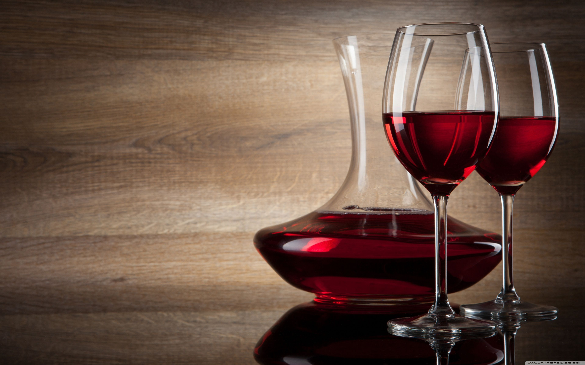
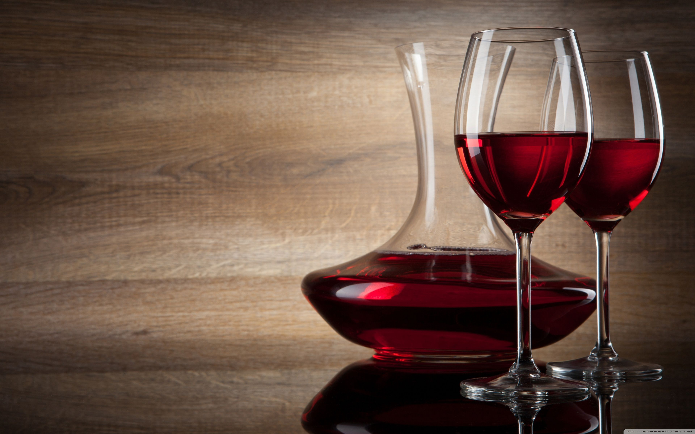
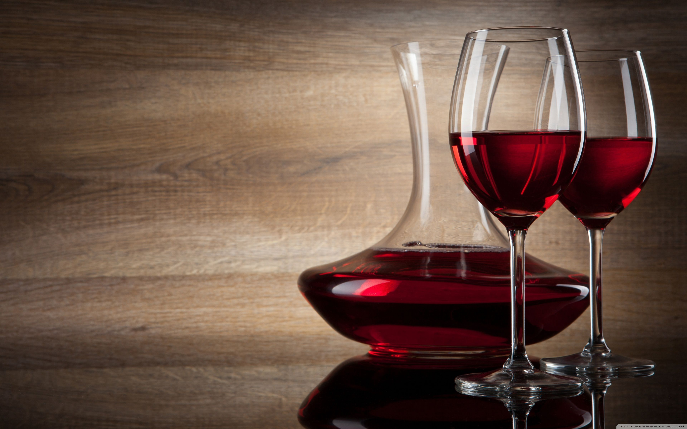
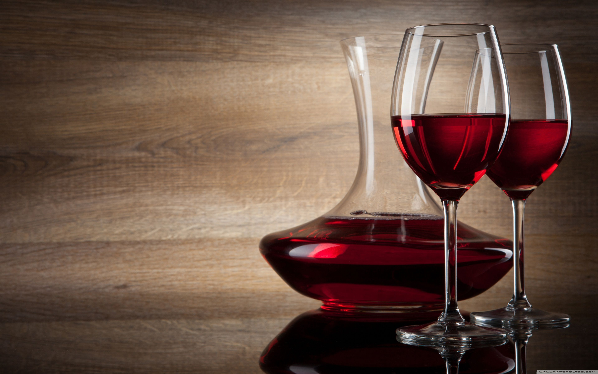

Cantine


 



Nani: Via degora 34 - 36024 Nanto (Vi)
La Nani è stata fondata nel 1967 dal Sig. Antonio Nani, nei colli Berici. Il marchio è poi passato di generazione in generazione, finché la famiglia Bastianello ha rilevato l’azienda dando un’ immagine tutta nuova. Infatti l’azienda è stata dal 2018 convertita completamente in biologico.
Clicca Per Visitare
Feudo Acreide: Via Napoli 23 - 96017 Noto (Sr)
fondata nel 2014 dalla famiglia Bastianello, per una ricerca esclusiva di vini particolari e rappresentativi del territorio siciliano. L’inizio della ricerca è partita da un'amicizia molto profonda attraverso la quale sono riusciti ad entrare nel calda e accogliente Sicilia. Tutte queste caratteristiche hanno fatto innamorare la famiglia di essa e dunque posto l'obiettivo iniziale di portare questa bellezza (attraverso l'impronta da viticoltori Veneti) nella casa Bastianello, rendendola disponibile per chiunque voglia cercare gusti caldi e intensi.
Clicca Per Visitare
Bastianello vini / Federico II Tenimenti associati: 36053 Via Casetta 2 Gambellara, (Vi)
fondata nel 2014 dalla famiglia Bastianello, per una ricerca esclusiva di vini particolari e rappresentativi del territorio siciliano. L’inizio della ricerca è partita da un'amicizia molto profonda attraverso la quale sono riusciti ad entrare nel caldo e accogliente territorio siciliano. Tutte queste caratteristiche hanno fatto innamorare la famiglia di essa e dunque posto l'obiettivo iniziale di portare questa bellezza (attraverso l'impronta da viticoltori Veneti) nella casa Bastianello, rendendola disponibile per chiunque voglia cercare gusti caldi e intensi.
Clicca Per Visitare